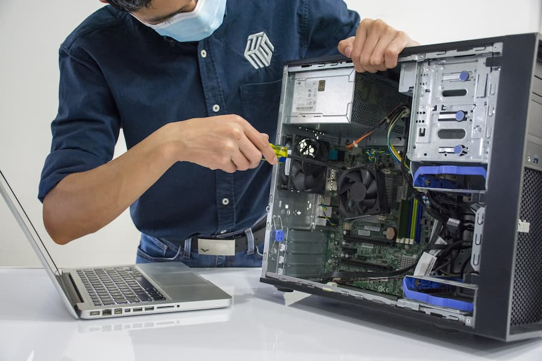
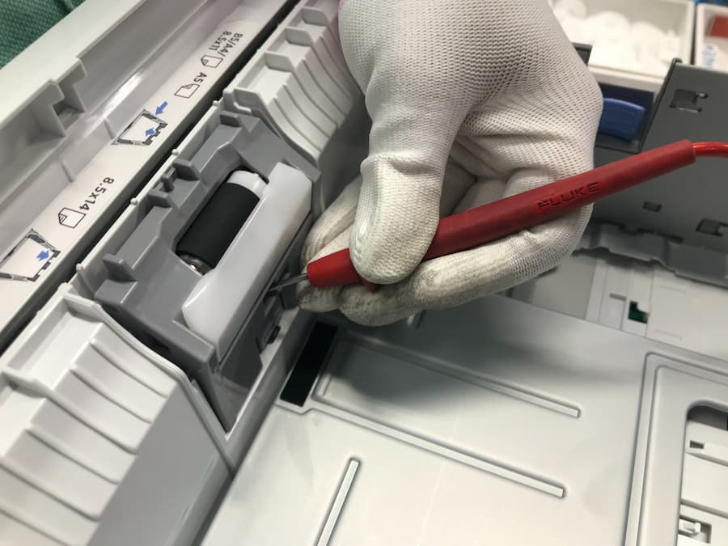

After my graduation I worked as a printer technician, it was quite tough because it was something new to me and involved skills about electronics and mechanics. Currently, I work as IT support technician in a catering company.
Diploma
- High school degree
- Licence (French education system for bachelor) in Computer system and Networking
Skills and knowledge
- Maintenance and repair of printers and computers
- Microsoft office (Word, excel, powerpoint)
- Windows servers
- Html, css


Certificate
- BYU PathwayConnect
Experience
- 2017 Internship as IT technician at Ambatovy Madagascar (a mining company)
- 2019 Internship at MPTDN for the Licence preparation
- 2020 Internship as IT technician at L’ami Informatique Madagascar
- 2021 Printer technician at SIDEF Madagascar
- 2022 IT Support Technician at NEWREST Madagascar